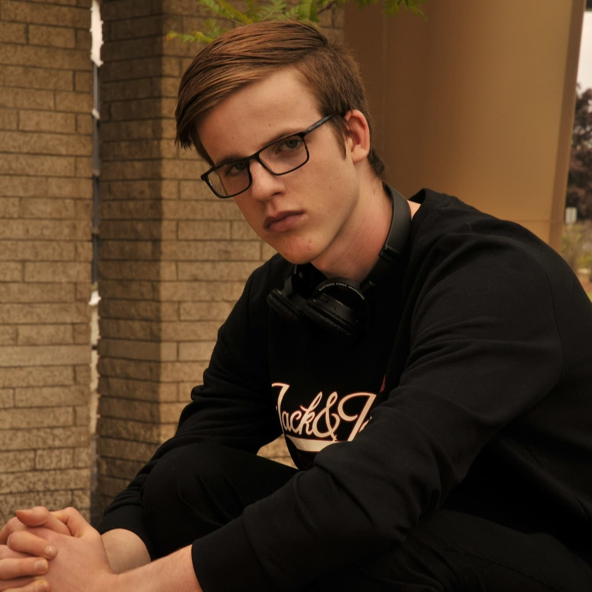
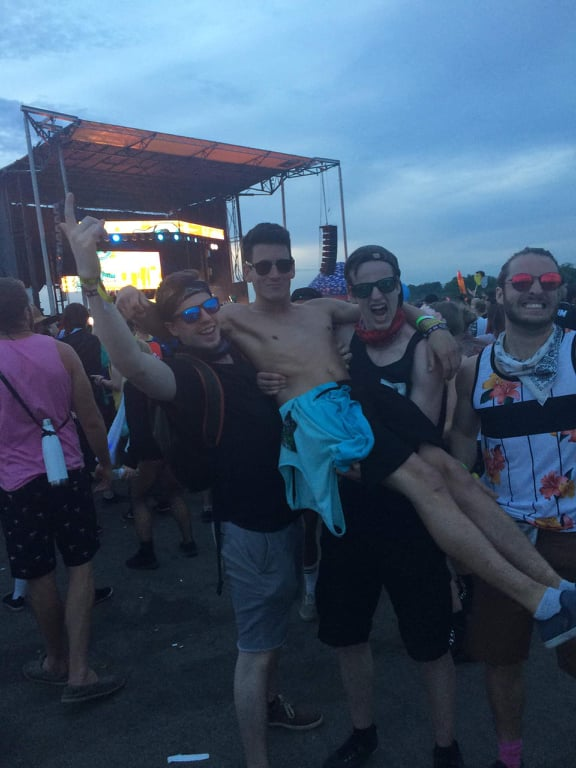

L'histoire de Guillaume Asselin-Verreault

Guillaume Asselin-Verreault (moi-même), photographié lors d'un cours de photo à La Cité. Photo : Rosa Vieira
Qui suis-je ?
Grand sportif de nature, j'adore le hockey, le tennis, bref pas mal tous les sports d'équipes ou individuels.
J'ai 20 ans et je suis passionné par le journalisme depuis l'âge de 14 ans. J'ai à cet âge eu une journée en milieu professionnel avec le journaliste Philippe-Vincent Foisy, assez connu sur la scène journalistique québécoise, qui oeuvre à ce jour chez Groupe TVA.
Dès lors, j'ai su et voulu m'aventurer vers le monde journalistique.
Outre le sport, j'aime bien la politique, alors couvrir la scène politique serait un second idéal journalistique, si je ne réussi pas à couvrir la scène sportive, qui est mon rêve depuis que je me suis aventuré dans ce domaine.
Études
J'ai eu mon diplôme d'études secondaires en 2018, après cinq belles années passées au Collège Saint-Alexandre de la Gatineau.
Ensuite, je me suis dirigé directement au Collège La Cité dans le programme de journalisme, où j'ai obtenu mon diplôme de technique professionnelle en journalisme.
J'étudie présentement à l'Université d'Ottawa, après avoir décidé de poursuivre mon parcours scolaire grâce à l'entente qui lie l'université avec La Cité. Je prévois avoir un baccalauréat en journalisme numérique en poche dès avril 2022, si tout va comme prévu.
Musique et festivals
Autre que le sport et les jeux vidéos, j'adore la musique, en particulier la musique électronique. Depuis 2018, je suis allé à plusieurs festivals, notamment pour y voir performer des artistes de «dubstep», un genre de musique qui m'intrigue et qui me passionne.

Guillaume Asselin-Verreault et ses amis au Festival de musique électronique Ever After 2019. Photo courtoisie
J'ai été à divers évènements au Canada, que ce soit à Gatineau, Ottawa, Montréal, Québec ou Toronto, la musique réussi à me faire découvrir du pays ainsi que des gens incroyables et fascinants avec lesquels je partage une passion pour la musique.
©2021 Guillaume Asselin-Verreault |
gasse084@uottawa.ca